── Attaching core tidyverse packages ──────────────────────── tidyverse 2.0.0 ──
✔ dplyr 1.1.4 ✔ readr 2.1.5
✔ forcats 1.0.0 ✔ stringr 1.5.1
✔ ggplot2 3.5.1 ✔ tibble 3.2.1
✔ lubridate 1.9.4 ✔ tidyr 1.3.1
✔ purrr 1.0.4
── Conflicts ────────────────────────────────────────── tidyverse_conflicts() ──
✖ dplyr::filter() masks stats::filter()
✖ dplyr::lag() masks stats::lag()
ℹ Use the conflicted package (<http://conflicted.r-lib.org/>) to force all conflicts to become errors
library(gt)library(readxl)
What type of plot do I use for each data type?
Flow chart to determine what type of data visualization and which ggplot geom to use
Three dimensional data
set.seed(345) # make the example reproduciblea <-rnorm(100,10,10)b <-rnorm(100,5,5)c <-rnorm(100,1,1)d <-data.frame(a,b,c)library(MASS)
Attaching package: 'MASS'
The following object is masked from 'package:dplyr':
select
DENS <-kde2d(d$a,d$b)contour(DENS)
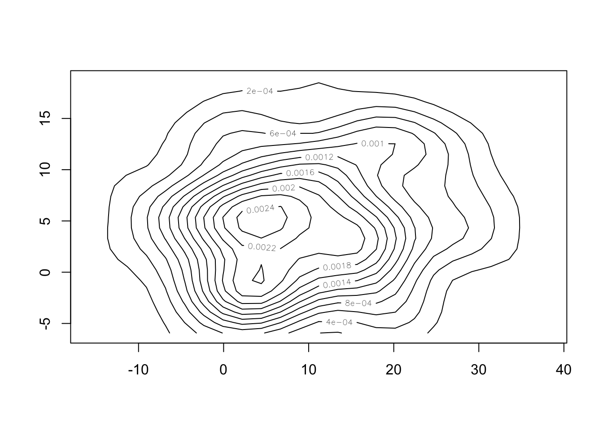
Three dimensional data
set.seed(345) # make the example reproduciblea <-rnorm(100,10,10)b <-rnorm(100,5,5)c <-rnorm(100,1,1)d <-data.frame(a,b,c)library(MASS)DENS <-kde2d(d$a,d$b)filled.contour(DENS,plot.axes = {axis(1)axis(2)contour(DENS,add =TRUE)})
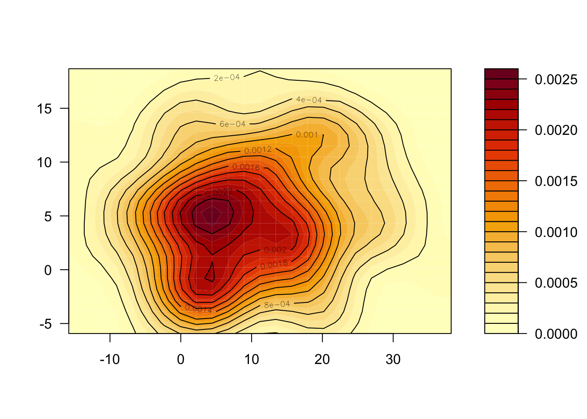
Three dimensional data
set.seed(345) # make the example reproduciblea <-rnorm(100,10,10)b <-rnorm(100,5,5)c <-rnorm(100,1,1)d <-data.frame(a,b,c)library(ggplot2)ggplot(d,aes(x=a,y=b)) +geom_density2d()
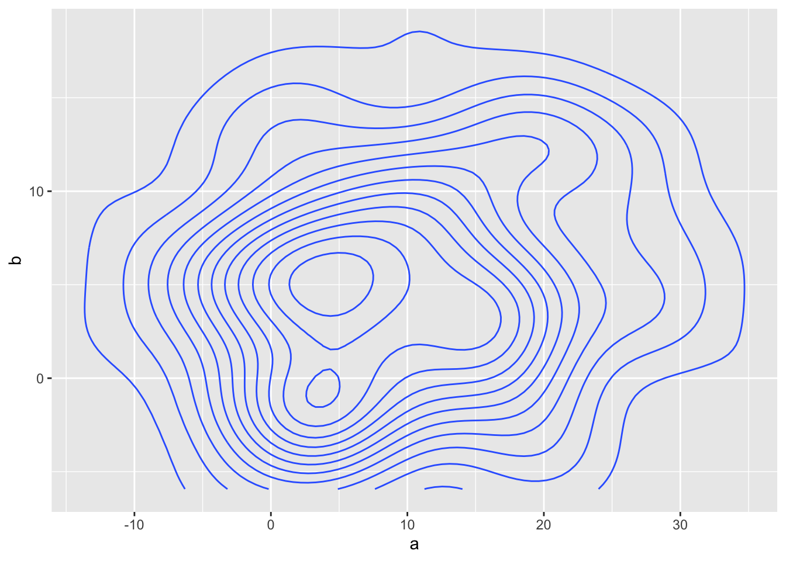
Examples of the good, bad and the ugly of graphical representation of data
Examples of bad graphs and how to improve them.
Courtesy of K.W. Broman
www.biostat.wisc.edu/~kbroman/topten_worstgraphs/
Ticker tape parade
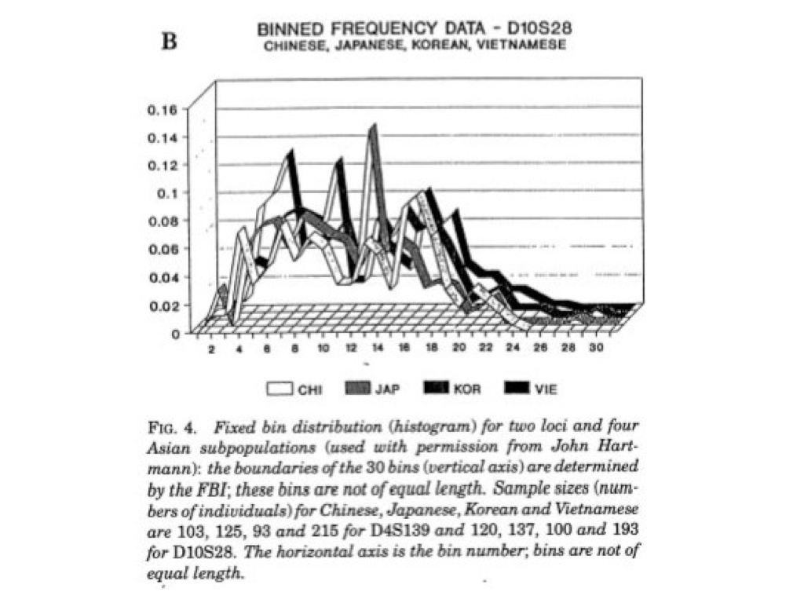
Roeder K 1994 DNA fingerprinting: A review of the controversy with discussion . Statistical Science 9:222T278, Figure 4
A line to no understanding
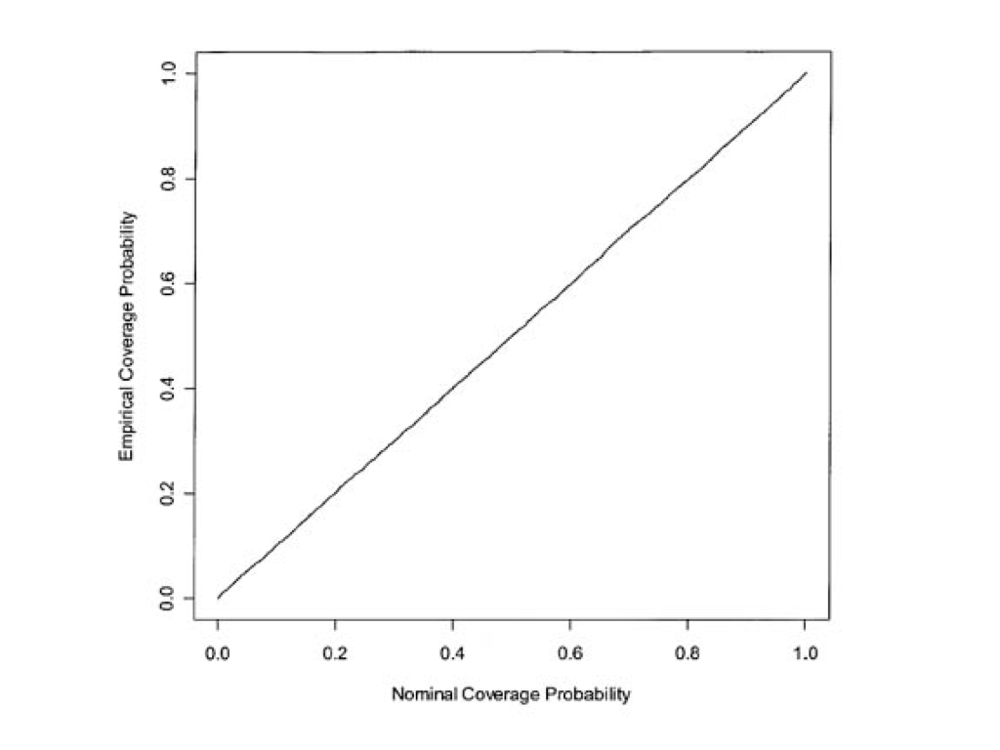
Epstein MP, Satten GA 2003 Inference on haplotype effects in caseTcontrol studies using unphased genotype data. American Journal of Human Genetics 73:1316T1329, Figure 1
A hot cup o’ mixed messages
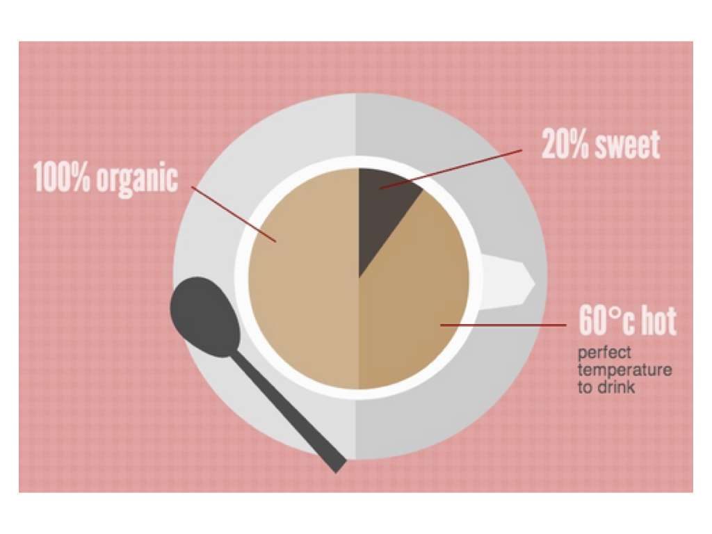
I want the biggest slice of the TFBS pie
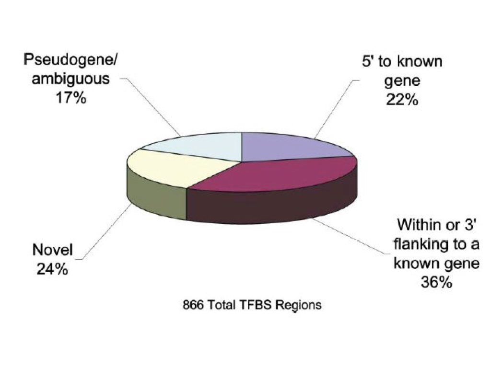
Cawley S, et al. 2004 Unbiased mapping of transcription factor binding sites along human chromosomes 21 and 22 points to widespread regulation of noncoding RNAs. Cell 116:499T509, Figure 1
A bake sale of pie charts
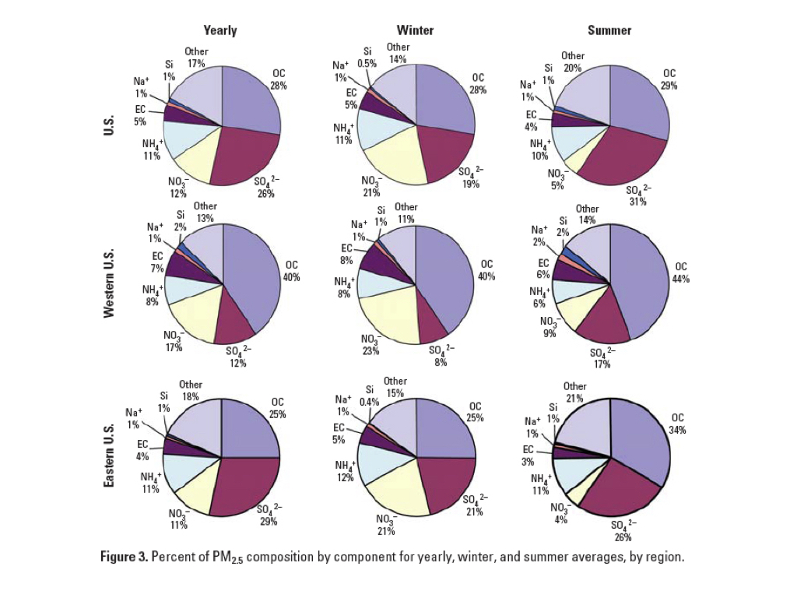
Bell ML, et al. 2007 Spatial and temporal variation in PM2.5 chemical composition in the United States for health effects studies. Environmental Health Perspectives 115:989T995, Figure 3
Wack a mole
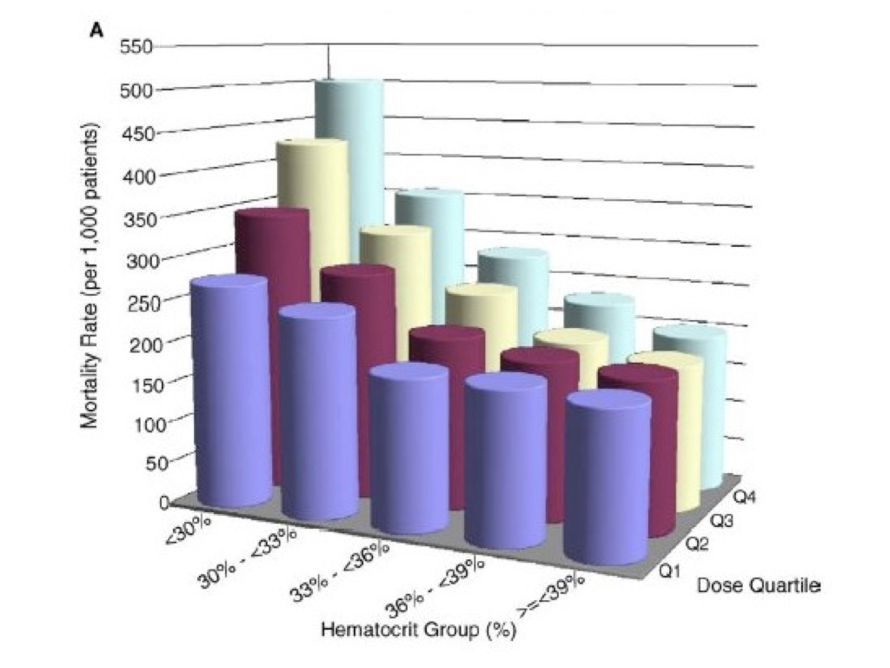
Cotter DJ, et al. 2004 Hematocrit was not validated as a surrogate endpoint for survival amoung epoetinTtreated hemodialysis patients. Journal of Clinical Epidemiology 57:1086T1095, Figure 2
Best Practices
Principles of effective display
“Graphical excellence is that which gives to the viewer the greatest number of ideas in the shortest time with the least ink in the smallest space”
— Edward Tufte
The best statistical graphic ever drawn according to Edward Tufte
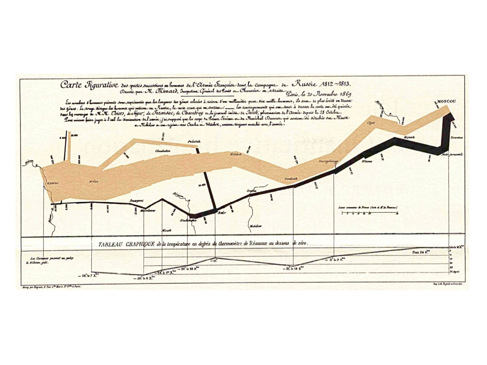
This map by Charles Joseph Minard portrays the losses suffered by Napoleon’s army in the Russian campaign of 1812
Principles of effective display
Show the data
Encourage the eye to compare differences
Represent magnitudes honestly and accurately
Draw graphical elements clearly, minimizing clutter
Make displays easy to interpret
“Above all else show the data” | Tufte 1983
The relationship between the numbers of native tropical stingless bees and Africanized honey bees onflowering shrubs in French Guiana. The data have been erased in the left panel. Redrawn from Roubik 1978.
“Maximize the data to ink ratio, within reason” | Tufte 1983
Draw graphical elements clearly, minimizing clutter
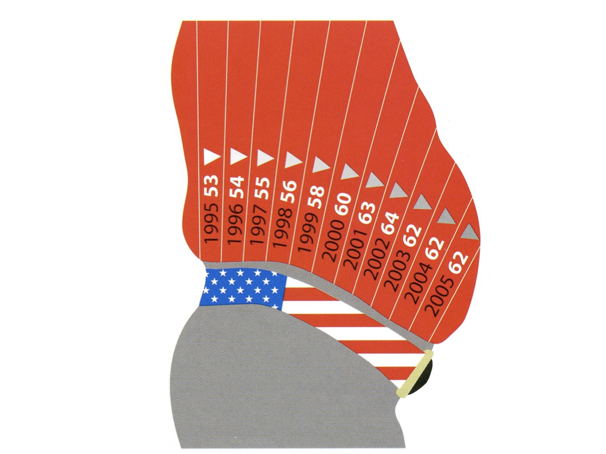
The percentage of adults over 18 with a “body mass index” greater than 25 in different years The Economist 2006 . Body mass index is a measure of weight relative to height.
“A graphic does not distort if the visual representation of the data is consistent with the numerical representation” – Tufte 1983
Represent magnitudes honestly and accurately
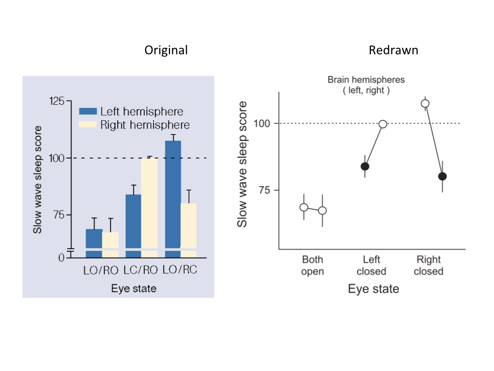
Slow wave sleep in the brain hemispheres of mallard ducks sleeping with one eye open. From Rattenborg et al. 1999 Nature
How Fox News makes a figure ….
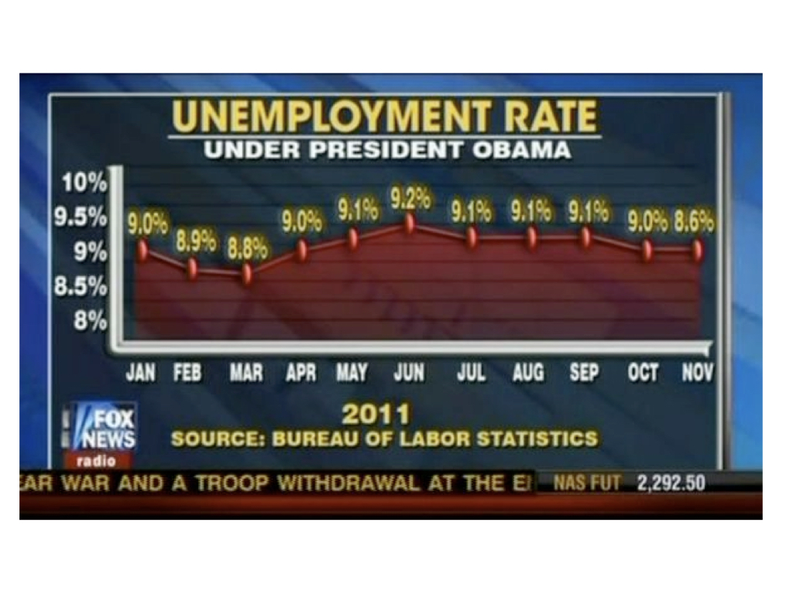
How Fox News makes a figure ….
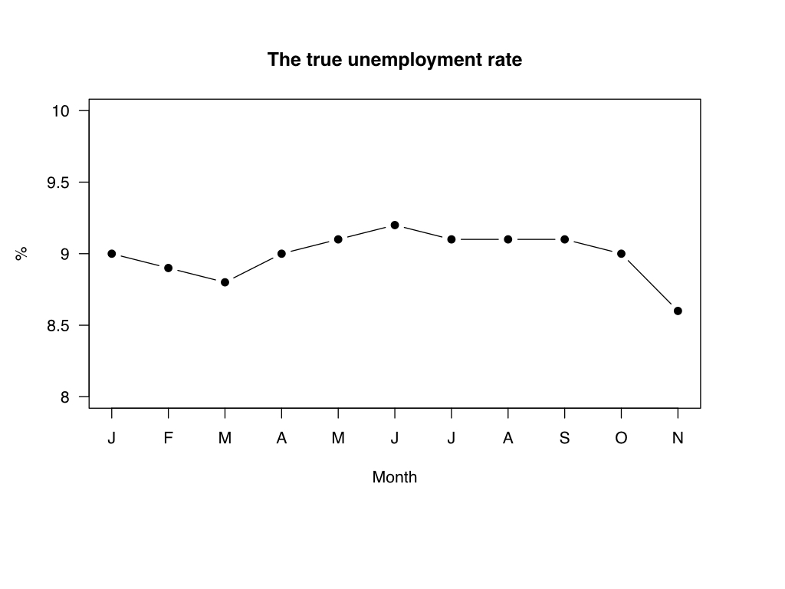
“Graphical excellence begins with telling the truth about the data” – Tufte 1983
R Interlude
read in the data set Week1b_Stickle_RNAseq.tsv and assign it to a data object
try out the command View for the whole data set
try out the command summary for one of the variables
load the package tidyverse and try the command glimpse
try making some nice plots of the different types of data
Probability, distributions and sampling
Stochastic Processes in Statistics
We often want to know truths about the world, but the best we can do is estimate them
Uncertainty in those estimates is a given.
The process of statistics is largely about quantifying and managing uncertainty.
Random variables are the product of stochastic processes
Expectations can be based on theoretical probability distributions
We are going to start with probability rules and then slowly experience different distributions
Different flavors of inferential statistics
Frequentist Statistics
Classical or standard approaches
Null hypothesis testing
Hierarchical Probabilistic Modeling
Maximum Likelihood
Bayesian Analyses
Machine Learning
What is probability
Frequency interpretation
“Probabilities are understood as mathematically convenient approximations to long run relative frequencies.”
Subjective (Bayesian) interpretation
“A probability statement expresses the opinion of some individual regarding how certain an event is to occur.”
Random variables & probability
Probability is the expression of belief in some future outcome
A random variable can take on different values with different probabilities
The sample space of a random variable is the universe of all possible values
Random variables & probability
The sample space can be represented by a
probability mass distribution (discrete)
probability density function (PDF) (continuous)
algebra and calculus are used for each respectively
probabilities of a sample space always sum to 1.0
How does it make sense that a sample space will always sum to 1?
Bernoulli distribution
Describes the expected outcome of a single event with probability p
The expectation or mean of a random variable X is:
\[E[X] = \sum_{\text{all x}}^{}xP(X=x) = \mu\]
Often we want to know how dispersed the random variable is around its mean.
One measure of dispersion is the variance
There are higher moments of distributions (e.g. skew and kurtosis)
\[Var(X) = E[X^2] = \sigma^2\]
Joint probability
\[Pr(X,Y) = Pr(X) * Pr(Y)\]
Note that this is true for two independent events
However, for two non-independent events we also have to take into account their covariance
To do this we need conditional probabilities
Conditional probability
For two independent variables: Probability of Y, given X, or the probability of X, given Y.
\[Pr(Y|X) = Pr(Y)\text{ and }Pr(X|Y) = Pr(X)\]
For two non-independent variables
\[Pr(Y|X) \neq Pr(Y)\text{ and }Pr(X|Y) \neq Pr(X)\]
Variables that are non-independent have a shared variance, which is also known as the covariance
Covariance standardized to a mean of zero and a unit standard deviation is correlation
What is Likelihood vs. Probability?
The probability of an event is the proportion of times that the event would occur if we repeated a random trial over and over again under the same conditions.
The likelihood is a conditional probability of a parameter value given a set of data
The likelihood of a population parameter equaling a specific value, given the data
L[parameter|data] = Pr[data|parameter]
Likelihood function which can have a maximum
What is a Bayesian estimate? - the use of prior distribution to update a posterior distribution
Data wrangling and exploratory data analysis (EDA)
Data cleaning and manipulation
Here, we differentiate “data cleaning” from “data manipulation”, which is perhaps an arbitrary distinction.
“Data cleaning” typically refers to altering variable class information, fixing mistakes that could have arisen in the data (e.g., an extra ‘.’ symbol in a numeric value), and things of this nature.
“Data manipulation”, in my mind, refers to altering the structure of the data in a way that changes the functional structure the data (e.g., an addition of a column, deletion of rows, long/wide formatting change).
Tidyverse family of packages
Let’s load the tidyverse meta-package and check the output.
library(tidyverse)
Tidyverse family of packages
Hadley Wickham and others have written R packages to modify data
These packages do many of the same things as base functions in R
However, they are specifically designed to do them faster and more easily
Wickham also wrote the package ggplot2 for elegant graphics creations
Example of a tibble
Example of a tibble
Types of vectors of data
int stands for integers
dbl stands for doubles, or real numbers
chr stands for character vectors, or strings
dttm stands for date-times (a date + a time)
lgl stands for logical, vectors that contain only TRUE or FALSE
fctr stands for factors, which R uses to represent categorical variables with fixed possible values
date stands for dates
Types of vectors of data
Logical vectors can take only three possible values:
FALSE
TRUE
NA which is ‘not available’.
Integer and double vectors are known collectively as numeric vectors.
In R numbers are doubles by default.
Integers have one special value: NA, while doubles have four:
NA
NaN which is ‘not a number’
Inf
-Inf
Tidyverse packages (cont.)
The tidyverse actually comes with a lot more packages than those that are just loaded automatically.1
This first function allows you to aggregate data by values of categorical variables
by_day <-group_by(flights, year, month, day)
Once you have done this aggregation, you can then calculate values (in this case the mean) of other variables split by the new aggregated levels of the categorical variable
That’s because aggregation functions obey the usual rule of missing values:
if there’s any missing value in the input, the output will be a missing value.
fortunately, all aggregation functions have an na.rm argument which removes the missing values prior to computation
Other dplyr goodies
group_by and ungroup: For (un)grouping. - Particularly useful with the summarise and mutate commands, as we’ve already seen.
slice: Subset rows by position rather than filtering by values. - E.g. starwars %>% slice(c(1, 5))
pull: Extract a column from as a data frame as a vector or scalar. - E.g. starwars %>% filter(gender=="female") %>% pull(height)
count and distinct: Number and isolate unique observations. - E.g. starwars %>% count(species), or starwars %>% distinct(species)
You could also use a combination of mutate, group_by, and n(), e.g. starwars %>% group_by(species) %>% mutate(num = n()).
R INTERLUDE | Playing with Tidyverse functions
Step 1 - Read in the Week1b_Stickle_RNAseq.tsv dataset
Step 2 - Make the dataset into a tibble
Step 3 - Select all of the categorical variables and only 4 of the gene count variables and put them into a new data object
Step 4 - Mutate each of the 4 gene expression values by performing a square root transformation making a new variable for each of the original (keep all 8 in the dataset).
Step 5 - Summarize the mean and standard deviation for each of the gene count variables grouped by the ‘sex’ and ‘population’ and ‘treatment’ categorical variables
Step 6 - Create a histogram for one of the original gene expression variables, and one of the derived variables
Step 7 - Create a box plot for one of the original gene expression variables, and one of the derived variables, split by treatment
Step 8 - Write the final data table to a .csv file and one of the figures to a .pdf file
Common probability distributions in genomics | Many of these are thanks to Sally Otto at UBC
Discrete Probability Distributions
Geometric Distribution
If a single event has two possible outcomes the probability of having to observe k trials before the first “one” appears is given by the geometric distribution
The probability that the first “one” would appear on the first trial is p, but the probability that the first “one” appears on the second trial is (1-p)*p
By generalizing this procedure, the probability that there will be k-1 failures before the first success is:
\[P(X=k)=(1-p)^{k-1}p\]
mean = \(\frac{1}{p}\)
variance = \(\frac{(1-p)}{p^2}\)
Geometric Distribution
Example: If the probability of extinction of an endangered population is estimated to be 0.1 every year, what is the expected time until extinction?
Geometric Distribution
If a single event has two possible outcomes the probability of having to observe k trials before the first “one” appears is given by the geometric distribution
The probability that the first “one” would appear on the first trial is p, but the probability that the first “one” appears on the second trial is (1-p)*p
By generalizing this procedure, the probability that there will be k-1 failures before the first success is:
\[P(X=k)=(1-p)^{k-1}p\]
mean = \(\frac{1}{p}\)
variance = \(\frac{(1-p)}{p^2}\)
Geometric Distribution
Example: If the probability of extinction of an endangered population is estimated to be 0.1 every year, what is the expected time until extinction?
Geometric Distribution
The distribution gives the probability of extinction in a given year (requiring that the population did not go extinct in all of the years prior)
If we want to know the probability of the population going exticnt by year 4, we simply add up the probabilities for years 1-3 using “or” rules
Testing Geometric Distributions
dgeom gives the density (probability) of an event (p) after (x) failures
\[ Mean = \frac{r}{\lambda} \]\[ Variance = \frac{r}{\lambda^2} \]
Gamma Distribution
Example: If, in a PCR reaction, DNA polymerase synthesizes new DNA strands at a rate of 1 per millisecond, how long until 1000 new DNA strands are produced?
Assume that DNA synthesis does not deplete the pool of primers or nucleotides in the chamber, so that each event is independent of other events in the PCR chamber.
Gamma Distribution
The gamma distribution generalizes the exponential distribution.
It describes the waiting time until the \(r^{th}\) event for a process that occurs randomly over time at a rate \(\lambda\)
Gamma Distribution
Example: If, in a PCR reaction, DNA polymerase synthesizes new DNA strands at a rate of 1 per millisecond, how long until 1000 new DNA strands are produced?
Assume that DNA synthesis does not deplete the pool of primers or nucleotides in the chamber, so that each event is independent of other events in the PCR chamber.
Common probability distributions
R INTERLUDE | binomially distributed data
Pretend that you want to create your own binomial distribution
you could flip 20 fair coins: 20 independent Bernoulli “trials”
you could then replicate this 100 times: 100 “observations”
for each one of your replicates you record the number of heads
probability of heads (“success”) for any flip of a fair coin is 0.5
Draw a diagram of what you think the distribution would look like
what will the x-axis represent, and what are its values?
what will the y-axis represent, and what are its values?
where will the ‘center of mass’ be?
what parameter determines the value of the center of mass?
what parameter determines the spread of the distribution?
R INTERLUDE | binomially distributed data
Using R, simulate these experimental data
using the \(rbinom()\) function
look at the arguments to see how they map on to the trials, probability of each trial, and number of replicates
use the \(hist()\) function to plot the simulated data.
what do the y- and x-axes represent?
what is the most common outcome, in terms of the number of “successes” per trial? Does this make sense?
Now just change you script to do the following
perform 200 trials for each of the 100 replicates
perform 2000 trials for each of the 100 replicate
how do the distributions change when you go from 20 to 200 to 2000 trials?
R INTERLUDE | binomially distributed data
Note that the binomial function incorporates both the ‘and’ and ‘or’ rules of probability
This part is the probability of each outcome (multiplication)
\[\large p^{k} (1-p)^{n-k}\]
This part (called the binomial coefficient) is the number of different ways each combination of outcomes can be achieved (summation)
\[\large {n \choose k}\] Together they equal the probability of a specified number of successes
\[\large f(k) = {n \choose k} p^{k} (1-p)^{n-k}\]
R INTERLUDE | binomially distributed data
Now perform your experiment using R
Use the rbinom function to replicate what you sketched out for coin flipping
Be sure to check out the other functions in the binom family
Make sure you know how you are mapping the parameeters to values
Take the output and create a histogram
Does it look similar to what you expected?
Now change the values around so that
You have more or fewer coin flips per trial
You replicate the process with more or fewer trials
You change the coin from being fair to being slightly biased
You change the coin from being slightly to heavily biased
The Gaussian or Normal Distribution
Log-normal PDF | Continuous version of Poisson (-ish)
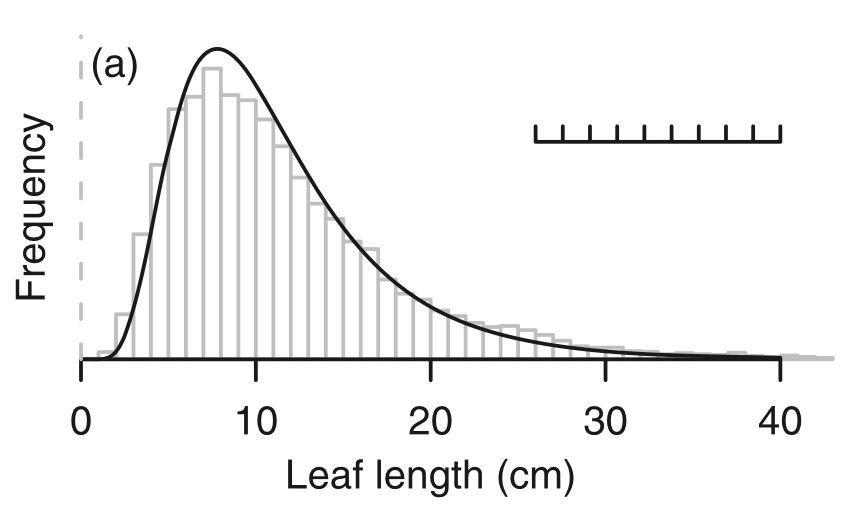
Transformations to ‘normalize’ data
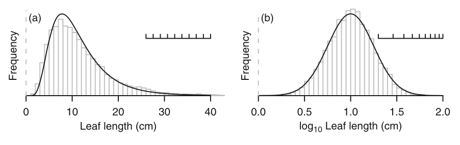
Transformations to ‘normalize’ data
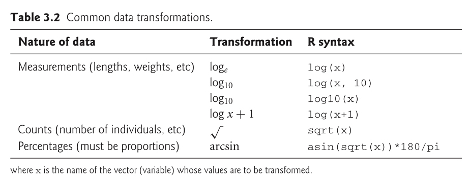
Binomial to Normal | Categorical to continuous
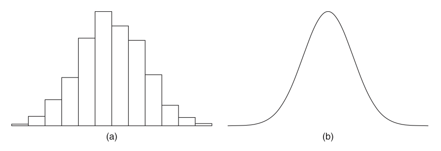
The Normal (aka Gaussian) | Probability Density Function (PDF)
Normal PDF
Normal PDF | A function of two parameters
(\(\mu\) and \(\sigma\))
where \[\large \pi \approx 3.14159\]
\[\large \epsilon \approx 2.71828\]
To write that a variable (v) is distributed as a normal distribution with mean \(\mu\) and variance \(\sigma^2\), we write the following:
Distribution of \(F_2\) genotypes | really just binomial sampling
Why else is the Normal special?
The normal distribution is immensely useful because of the central limit theorem, which says that the mean of many random variables independently drawn from the same distribution is distributed approximately normally
One can think of numerous situations, such as
when multiple genes contribute to a phenotype
or that many factors contribute to a biological process
In addition, whenever there is variance introduced by stochastic factors the central limit theorem holds
Thus, normal distributions occur throughout genomics
It’s also the basis of the majority of classical statistics
z-scores of normal variables
Often we want to make variables more comparable to one another
For example, consider measuring the leg length of mice and of elephants
Which animal has longer legs in absolute terms?
Proportional to their body size?
A good way to answer these last questions is to use ‘z-scores’
z-scores of normal variables
z-scores are standardized to a mean of 0 and a standard deviation of 1
We can modify any normal distribution to have a mean of 0 and a standard deviation of 1
Another term for this is the standard normal distribution
\[\huge z_i = \frac{(x_i - \bar{x})}{s}\]
R INTERLUDE | Simulate a population and sample it!
Simulate a population of 10,000 individual values for a variable x:
x <-rnorm(10000, mean=50.5, sd=5.5)
Take 1000 random samples of size 20, take the mean of each sample, and plot the distribution of these 1000 sample means.
For one of your samples, use the equation from the previous slide to transform the values to z-scores.
Plot the distribution of the z-scores, and calculate the mean and the standard deviation.
R INTERLUDE | Simulate a population and sample it!
Now, create a second population (called x.lognorm) by log-transforming all 10,000 values from population “x”
Plot the histogram of these data
Repeat the taking of 1000 samples of size 20
Take the mean of each sample
Plot the distribution of these 1000 sample means from the known lognormal population.
What does the distribution of the sampled means look like?
More than one variable | Bivariate normal, correlation and covariation
More than one variable | Bivariate normal, correlation and covariation
Covariance and Correlation
Linear Models
Show the data! | Anscombe’s Quartet
Show the data! | Anscombe’s Quartet
Mean of x in each case 9 (exact)
Variance of x in each case 11 (exact)
Mean of y in each case 7.50 (to 2 decimal places)
Variance of y in each case 4.122 or 4.127 (to 3 decimal places)
Correlation between x and y in each case 0.816 (to 3 decimal places)
Linear regression line in each case \(y =3.00 + 0.50x\) (to 2 decimal places)
Sampling and estimation
Where do we begin?
A major goal of statistics is to estimate parameters of a population so that we can compare them to values that are of practical importance to our understanding of the system, or to compare parameter estimates between and among different populations
This is the first important step before getting to hypothesis testing!
Understanding Populations and their Parameters
We often think about the samples we are collecting as a part of a larger population
Since we can’t measure every member of that population, we instead use sampling to estimate the parameters of the population as a whole
Some common parameters: mean, range, median
If we performed random sampling, we assume that the parameter estimates of our sample are equitable to the true population parameters
Accuracy vs. Precision
Accuracy vs. Precision
Accuracy is the closeness of an estimated value to its true value
Precision is the closeness of repeated estimates to one another
Our goal is to have unbiased estimates that are the most precise
We have to estimate parameters and test hypotheses by taking samples that approximate the underlying distribution
The goal of replication is to quantify variation at as many levels in a study as possible
The goal of randomization is to avoid bias as much as possible
Parameter Estimation
Parametric (a few special exceptions, like the sample mean and its standard error)
Ordinary Least Squares (OLS) - optimized procedure that produces one definitive result, easy to use but no estimates of confidence
Resampling - bootstrapping and randomization
Maximum Likelihood (ML) - Can provide model-based estimates with confidence, but harder to calculate
Bayesian Approaches - Incorporates prior information into ML estimation
Sampling variation of a parameter
Estimation
Estimation is the process of inferring a population parameter from sample data
The value of one sample estimate is almost never the same as the population parameter because of random sampling error
Imagine taking multiple samples, each will be different from the true value
Most will be close, but some will be far away
The expected value of a very large number of sample estimates is the value of the parameter being estimated
Use R to make 1000 “pseudo-samples” of size 10 (with replacement), using a for loop as before.
Name the pseudo-sample object “xboot”, and name the means of the xboot samples “z”.
Plot the histogram of the resampled means, and calculate the standard deviation of the sample means (the bootstrap SEM) using the sd() function.
How does it compare with the ordinary standard error of the mean calculated from the original, real sample?
sd(x)/sqrt(10)
Now take one of the genes from the GacuRNAseq_Subset.csv data and obtain a bootstrapped estimate of the mean expression level.
R INTERLUDE | Bootstrapping to produce a confidence interval
The 2.5th and 97.5th percentiles of the bootstrap sampling distribution are a passable 95% confidence interval
Note that no transformations or normality assumptions needed
You can use the quantile() function to calculate these
On your own - use R to figure out the bootstrap distribution for other parameters (such as variance).
Parameter Estimation | Ordinary Least Squares (OLS)
Algorithmic approach to parameter estimations
One of the oldest and best developed statistical approaches
Used extensively in linear models (ANOVA and regression)
By itself only produces a single best estimate (No C.I.’s)
Can use resampling approaches to get C.I.’s
Many OLS estimators have been duplicated by ML estimators
Parameter Estimation | Ordinary Least Squares (OLS)
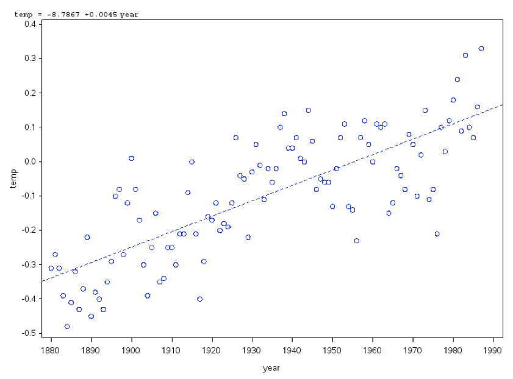
Sampling Exercise
Since we are working with simulated data, we can also afford to simulate our sampling!
Try taking a sample from our true_pop dataset and change the sample size, then calculate the mean and range for your sample and see how it compares to the true values.
How many college students are you including in your survey?
Test it out
Try changing the lambda of the original population, and see how the SD changes
[1] 2.24649
Sampling Exercise
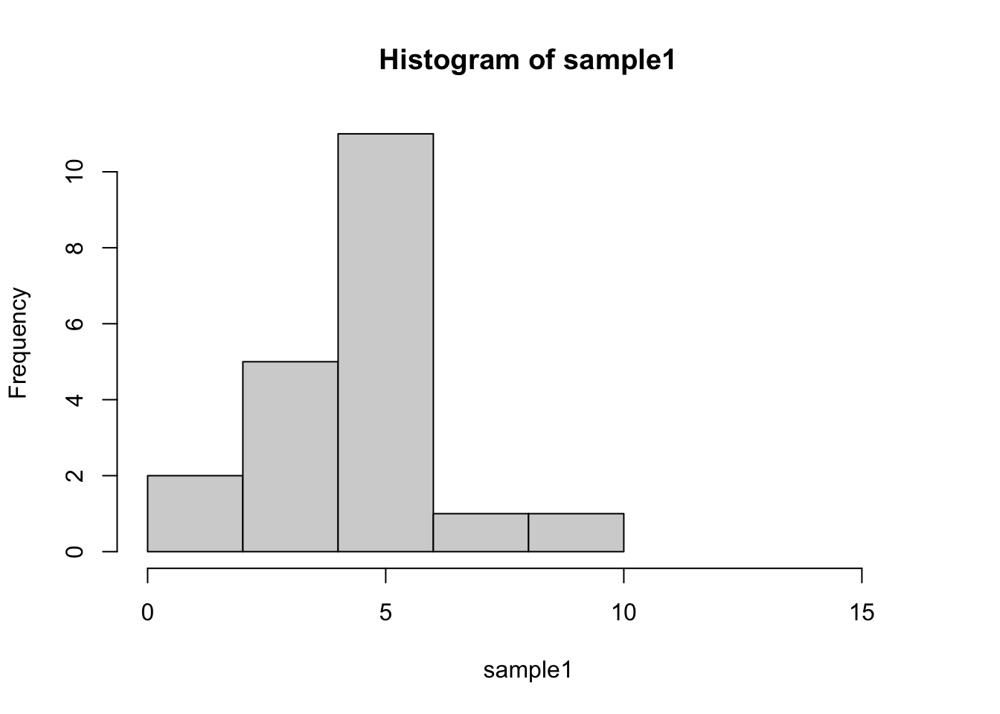
[1] "Mean: " "4.95"
[1] "Range: " "1" "10"
Randomness in Sampling
Because of the randomness of sampling, you may get close to the true estimates even with a small sample size - but your results will change each time you take a new sample of the same size
How do we get a feel for how accurate each sample size is? Or which sample size is recommended?
Surveying your Sampling
samps_var <-replicate(50, sample(true_pop, 10)) #Take 50 samples of size 10samps_var_means <-apply(samps_var, 2, mean) #Calculate the mean from each samplehist(samps_var_means) #Plot the distribution of sample means
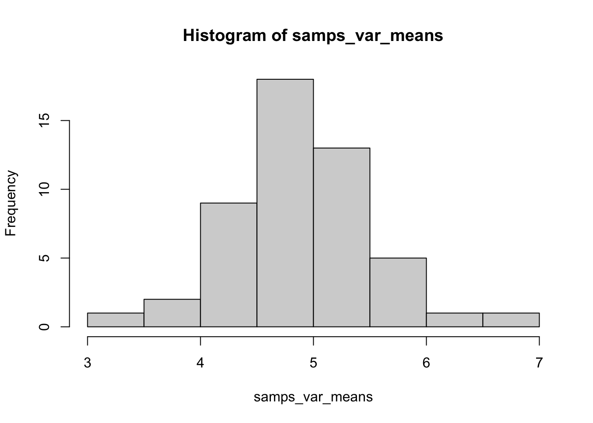
Surveying your Sampling
We get close to the true mean (4.9) about 2/3rds of the time - is this good enough?
table(samps_var_means >4.5& samps_var_means <5.5)
FALSE TRUE
19 31
Surveying your Sampling
This sampling variation is what we have to deal with, and account for, as empirical scientists.
If this had been a real-world scenario, we likely would be basing our estimate for the true mean on just a single sample mean.
Getting close to the idea of power - does our experimental design have the power to detect the parameters we are interested in?
Sampling Distributions
The previous exercise illustrates the concept of a sampling distribution.
We sampled over and over again (50 times) and calculated the mean for each sample to demonstrate the sampling distribution for the mean, our original parameter of interest.
One important point is that the sampling distribution for a given parameter is often very different from the variable’s distribution in the population. In many cases, the sampling distribution is normal or approximately so.
Sampling Distributions - It’s been Normal this whole time?!
The Central Limit Theorem
The Central Limit Theorem
For most real world data sets we can’t empirically determine a sampling distribution by taking many actual samples, because we often have just the one sample.
Fortunately, we can rely on the Central Limit Theorem to make some assumptions about sampling distributions, particularly when estimating a mean from a single sample, or when estimating most any parameter using a “pseudo” or re-sampling process we refer to as “bootstrapping”
Standard Error - the Range of the Sampling Distribution
The sampling distribution models all values we might have obtained from our sample and their probabilities of occurrence.
The standard error of an estimate can be conceptualized as the standard deviation of a sampling distribution.
So, whenever we obtain a parameter estimate, we need to include the standard error in some form or another, which is a measure of the precision of our estimate.
Standard Error
The sample size and the spread of the distribution (range) - contribute to what is known as the standard error of a random variable.
The standard error for any given sample attribute (such as a sample mean), can be calculated either based on distributional assumptions, or by a process called “resampling.”
Standard error
Calculating the Standard Error
Standard Error of the Mean (SEM)
SEM = SD / sqrt(sample size)
Calculating the Standard Error
Think conceptually - how will SEM change as sample size increases?
-Unfortunately, most other kinds of estimates (anything not the mean) do not have this amazing property, but we can rely on another approach to calculate the standard error. - This involves generating your own sampling distribution for the estimate using the “bootstrap,” a method invented by Efron (1979). - We call the bootstrap, and other methods that do not rely on distributional assumptions of the variable itself, “nonparametric” approaches.
Easy steps for bootstrapping in R
Take a random sample (with replacement) from your sample data
Calculate the estimate using the measurements in the bootstrap sample (step 1). This is the first bootstrap replicate estimate
Repeat steps 1 and 2 a large number of times (1000 times is reasonable)
Calculate the sample standard deviation of all the bootstrap replicate estimates obtained in step 3 (SSD = sd(sample)/sqrt(sample size))
Bootstrapping
The resulting quantity is called the “bootstrap standard error”
The bootstrap can be applied to almost any sample statistic, including means, proportions, correlations, and regression parameters.
It works when there is no ready formula for a standard error, for example when estimating the median, trimmed mean, correlation, eigenvalue, etc.
It is nonparametric, so doesn’t require normally-distributed data, as mentioned. - - It works well for parameter estimates that are based on complicated sampling procedures or calculations. For example, it is used to assess confidence in local relationships within phylogenetic trees.
Confidence Intervals
A confidence interval is a range of values about a parameter estimate, such that we are X% certain that the true population parameter value lies within that interval.
For now, know that for a normally distributed sample, a confidence interval about the population mean can be calculated using the t.test() function in base R.
The 95% confidence interval is commonly reported in statistical analysis results, by convention, but other values are occasionally reported as well.
Relationship between Mean and Variance
Population means and variances (and hence standard deviations) tend to have a strong, positive relationship.
So an otherwise similarly shaped distribution, but with a much larger mean, will by default have a much larger standard deviation
Relationship between mean and variance
This means it is inappropriate to compare variations of different populations with largely different means
For instance, comparing the standard deviation for a body measurement in a population of mice, with the same body measurement in a population of elephants is not meaningful.
Test it out
Try changing the lambda of the original population, and see how the SD changes
To make standard deviations comparable across populations with very different means, we can instead compare a standardized metric called the “coefficient of variation” (CV), which is simply the sample standard deviation divided by the sample mean (and usually expressed as a % by multiplying by 100).